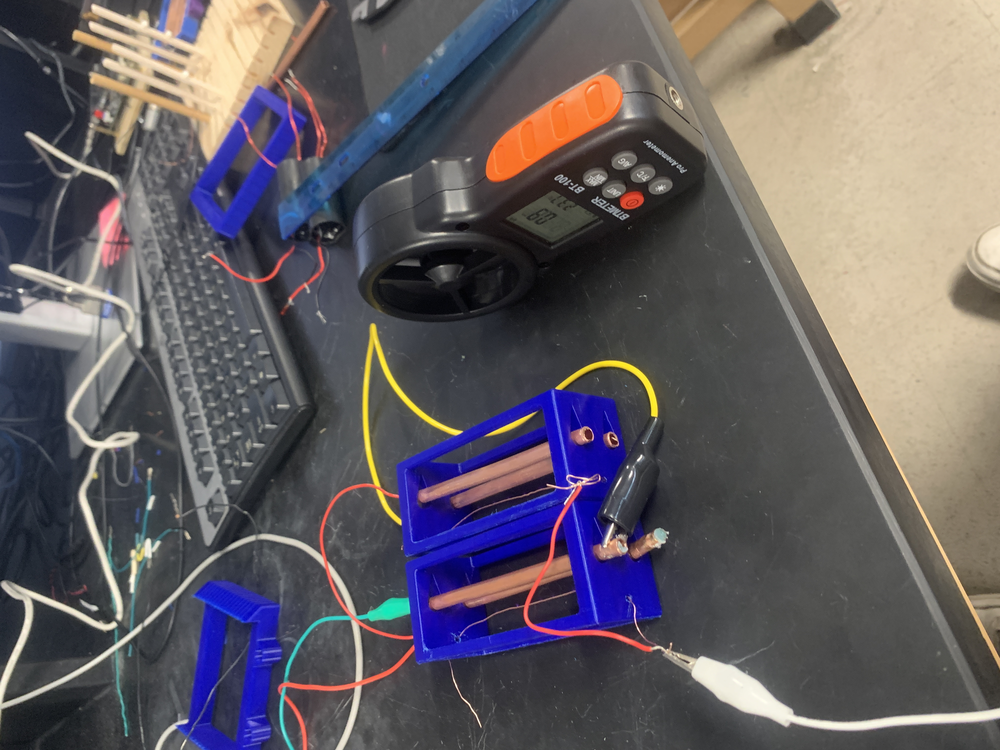

Additional Project
Ionic Propulsion
Explored ionic propulsion as a high-voltage experimental system, balancing electrode geometry, power delivery, and measurable thrust in a compact prototype setup.
Overview
This project was a lightweight research build focused on understanding the physical limits of ionic propulsion at prototype scale. It combined experimental hardware, electrical safety considerations, and rapid iteration on geometry.
What I Built
- Prototype electrode layouts for ionic-thrust experiments
- Bench-top test structure for comparing geometric changes
- Early validation setup for observing qualitative thrust behavior
Images
